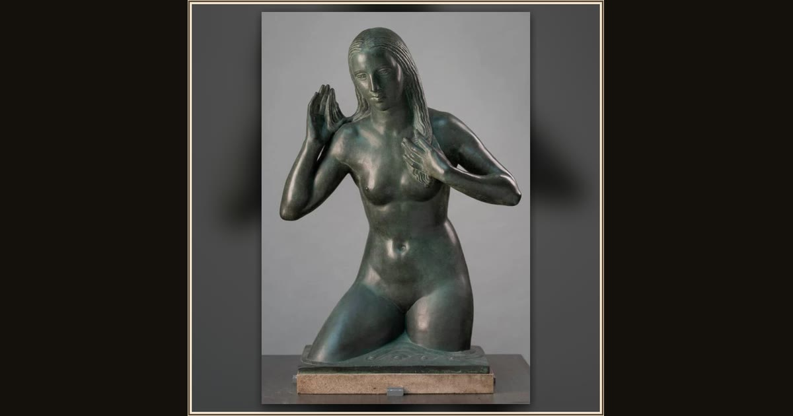

Nausicaa
Robert Jackson Emerson · 1932 · Aberdeen Art Gallery · Aberdeen, Scotland
Cast in gleaming bronze, Princess Nausicaa kneels at the river's edge — the brave girl who was not afraid to help a shipwrecked stranger. Explore its place in Book VI of the Odyssey.